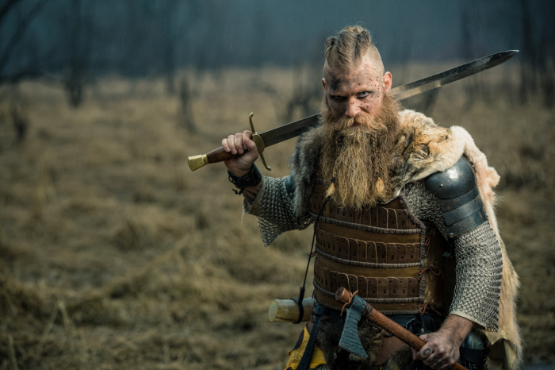
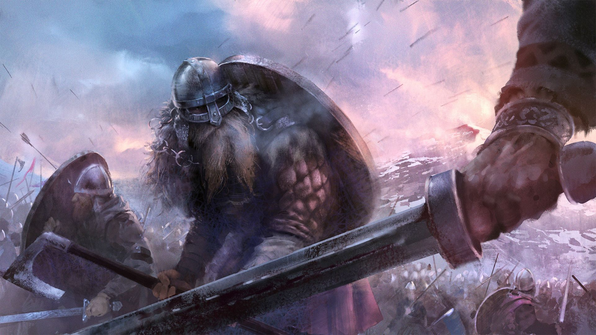
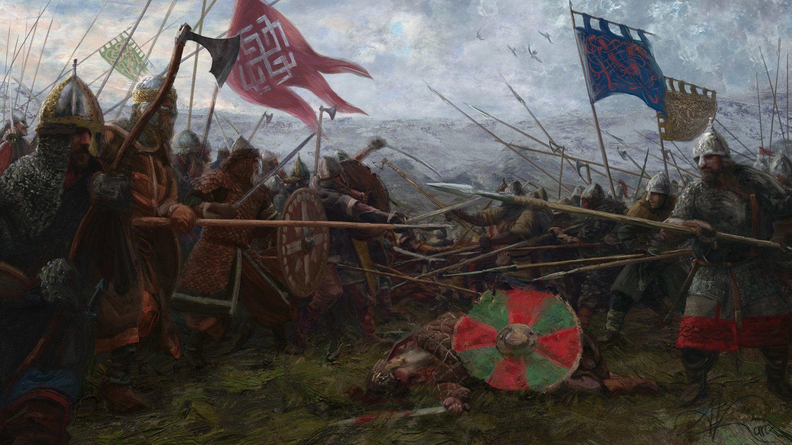
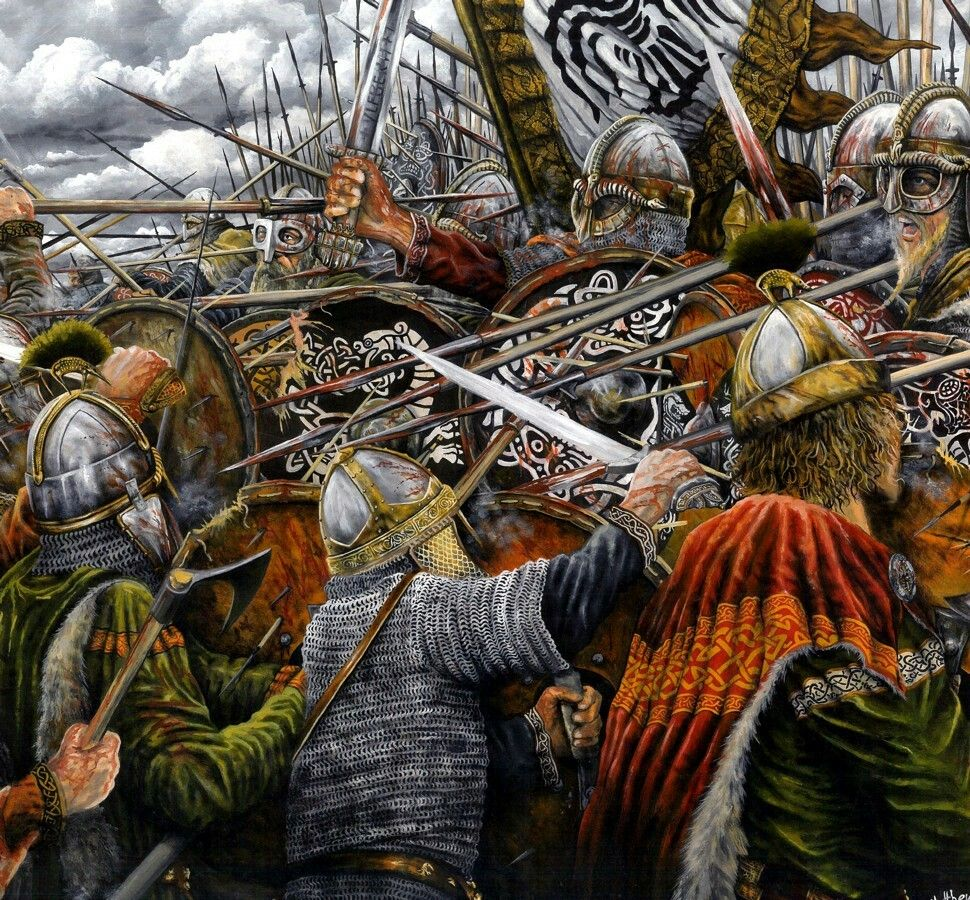
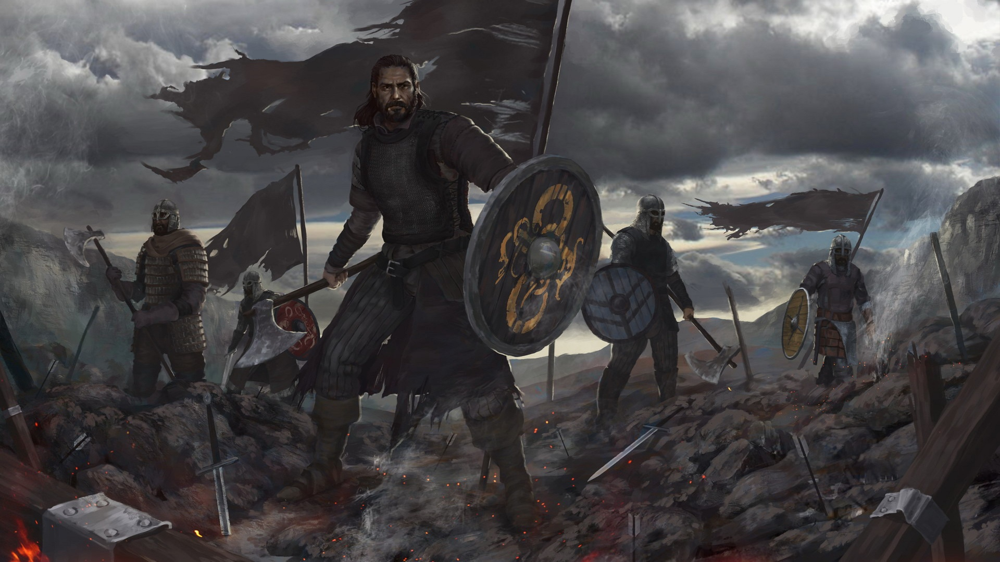

Почему викинги предпочитали топоры
Образ викинга – пирата, разбойника, купца, первопроходца и колонизатора во многом ассоциируется с таким оружием, как топор. Вопреки популярному заблуждению, викингами в военных похода никогда не использовались бытовые топоры. Существовало несколько боевых разновидностей, которые применялись строго для войны. Однако, почему викинги предпочитали именно брутальные топоры, а не утонченные мечи?
На протяжении многих столетий начиная от античности и заканчивая поздним средневековьем главным оружием профессионального воина (в большинстве случаев) было копье, и викинги в этом отношении не исключение. Знаменитое боевое построение «скьялборг» – «стена щитов» (викингская фаланга) основано именно на использовании щитов и копий. Важно понимать, что человек с копьем имеет огромное преимущество над человеком без копья банально из-за длины оружия. Это преимущество увеличивается в разы, если человек к тому же стоит в строю таких же боевых товарищей.
Мечи, булавы, сабли и наконец топоры всегда выполняли функцию дополнительного вооружения. Однако, не без помощи развития сначала романтической культуры в эпоху Нового времени, а затем и развития уже массовой культуры в XX веке копье оказалось натурально вычеркнуто из повествовательной традиции. По всей видимости «палка с шилом» выглядит недостаточно убедительно. Забавно, что предки считали иначе. Тем не менее, не нужно думать, что эти самые мечи и топоры пускались в ход редко. Просто основу воинского ремесла у большинства народов Европы составляло именно владение копьем.
Что же касается топоров, то они были именно оружием вспомогательным: удобным средством спонтанной резни или абордажа. Большее распространение, чем мечи, боевые топоры получили по причинам экономическим. Меч требует больше железа, меч требует более искусного кузнеца, а значит и стоит банально дороже. Далеко не всякий карл – свободный человек, мог позволить себе такую роскошь, даже «записавшись» в викинги. Кроме того, меч обладает рядом недостатков: у него слабая поражающая способность против хорошо защищенных целей, за ним требуется постоянный уход, меч гораздо легче приводится в негодность, а его утрата или поломка куда сильнее бьют по карману.
Другое дело топор: он относительно дешев и прост, при этом обладает действительно чудовищным поражающим эффектом как против незащищенного человека, так и против человека в кольчуге. Сделать топор мог почти любой мало-мальски опытный кузнец. Поэтому у большинства свободных людей средневековой Скандинавии дома под кроватью на случай войны и веселья лежал именно топор, а не меч. Конечно, рано или поздно наиболее успешные воины, ходившие в вик, могли себе позволить приобрести меч с награбленного. Или могли получить его в качестве трофея. Однако, на стоимость этого оружия можно было бы жениться и корову купить, да еще и не одну.